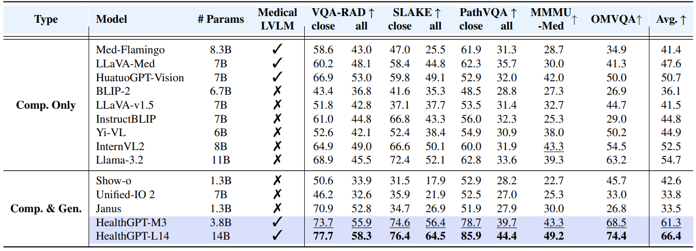
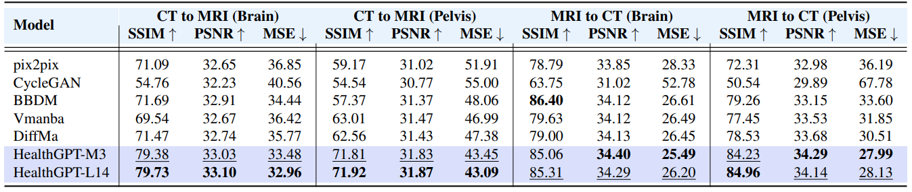

🔥Highlights
In this work, we design HealthGPT - a large visual language model (Med-LVLM) for the medical domain that integrates medical visual comprehension and generation in a unified autoregressive paradigm. Our concept is to progressively apply heterogeneous comprehension and generation knowledge to pre-trained Large Language Models (LLMs) so that the pre-trained LLMs can effectively follow visual comprehension and generation instructions. We contend that achieving this necessitates three essential components.
1. Dataset. Firstly, in order to effectively train HealthGPT, we designed a comprehensive medical domain-specific comprehension and generation dataset called VL-Health.
2. Method. Next, HealthGPT has a unified framework that integrates medical visual understanding and generation. It achieves this through a novel Heterogeneous Low Rank Adaptive (H-LoRA) technique complemented by a tailored Hierarchical Visual Perception Approach and a three-stage learning strategy.
3. Models. We released two configurations of models, HealthGPT-M3 and HealthGPT-L14, to meet different requirements and resource availability. HealthGPT-M3 is a smaller version optimized for speed and reduced memory usage, while HealthGPT-L14 is a larger version designed for higher performance and more complex tasks.
Abstract
We present HealthGPT, a powerful Medical Large Vision-Language Model (Med-LVLM) that integrates medical visual comprehension and generation capabilities within a unified autoregressive paradigm. Our bootstrapping philosophy is to progressively adapt heterogeneous comprehension and generation knowledge to pre-trained large language models (LLMs). This is achieved through a novel heterogeneous low-rank adaptation (H-LoRA) technique, which is complemented by a tailored hierarchical visual perception approach and a three-stage learning strategy. To effectively learn the HealthGPT, we devise a comprehensive medical domain-specific comprehension and generation dataset called VL-Health. Experimental results demonstrate exceptional performance and scalability of HealthGPT in medical visual unified tasks. Our project can be accessed at this https URL.
Task Classification and Support

HealthGPT supports 7 types of medical comprehension tasks and 5 types of medical generation tasks, outperforming recent unified visual models and medical-specific models.
HealthGPT Model Architecture
The HealthGPT architecture integrates hierarchical visual perception and H-LoRA, employing a task-specific hard router to select visual features and H-LoRA plugins, generating text and vision outputs with an autoregressive manner.
Main Results
Table 1: Comparison of HealthGPT with other LVLMs and unified multi-modal models on medical visual comprehension tasks. Bold and underlined text indicates the best performance and second-best performance, respectively.
Table 2: The experimental results for the four modality conversion tasks.
Table 3: Comparison results of super-resolution task.
BibTeX
@misc{lin2025healthgptmedicallargevisionlanguage,
title={HealthGPT: A Medical Large Vision-Language Model for Unifying Comprehension and Generation via Heterogeneous Knowledge Adaptation},
author={Tianwei Lin and Wenqiao Zhang and Sijing Li and Yuqian Yuan and Binhe Yu and Haoyuan Li and Wanggui He and Hao Jiang and Mengze Li and Xiaohui Song and Siliang Tang and Jun Xiao and Hui Lin and Yueting Zhuang and Beng Chin Ooi},
year={2025},
eprint={2502.09838},
archivePrefix={arXiv},
primaryClass={cs.CV},
url={https://arxiv.org/abs/2502.09838},
}